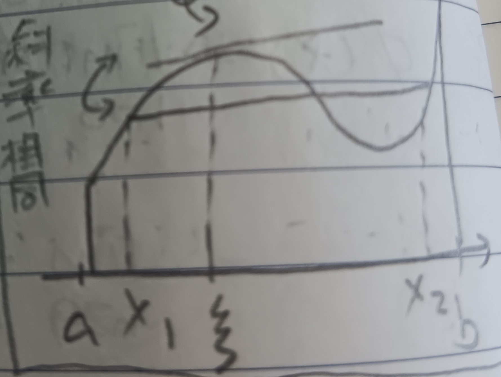

這份筆記是關於微分的定義與性質，以及微積分基本定理。
微分
定義 1：微分 (Differentiation)
給定定義在\([a,b]\)上的函數\(f\)及\(p\in(a,b)\)。若是以下極限存在： \[ \lim_{p_1\to p}\frac{f(p_1)-f(p)}{p_1-p} \] 則稱\(f\)在\(p\)可微，且稱上述極限為\(f\)在\(p\)的微分，記為\(f'(p)\)，或\(\left.\frac{df}{dx}\right|_p\)。
註記 1-1
以上定義等價於 \[ \lim_{h\to 0}\frac{f(p+h)-f(p)}{h}=f(p) \]
例 1-2
給定常數函數\(f(x)=c\)，則\(f(x+h)=f(x)=c\)，故\(f'(x)=0\)。
例 1-3
給定函數\(f(x)=x^\alpha\), \(\alpha\in\mathbb{N}\)。則 \[ \begin{aligned} f'(x)=\lim_{x_1\to x}\frac{x_1^\alpha-x^\alpha}{x_1-x}&=\lim_{x_1\to x}\frac{\bcancel{(x_1-x)}(x_1^{\alpha-1}+x_1^{\alpha-2}x+\cdots+x^\alpha-1)}{\bcancel{(x_1-x)}}\\ &=\alpha x^{\alpha-1} \end{aligned} \]
註記 1-3-1
用一些逼近與極限的手段可知例1-3的\(f'(x)=\alpha x^{\alpha-1}\)對所有\(\alpha\in\mathbb{R}\)都成立。
微積分基本定理I
定理 2：微積分基本定理I (Fundamental Theorem of Calculus I)
給定在\([a,b]\)上連續的函數\(f\)，令\(\phi(x)=\int_a^x f(t)dt\)。則\(\phi\)在\((a,b)\)上可微，且\(\frac{d\phi}{dx}=f(x)\)(即\(\phi'(x)=f(x)\))。
證明：有 \[
\begin{aligned}
\phi'(x)&=\lim_{h\to 0}\frac{\phi(x+h)-\phi(x)}{h}\\
&=\lim_{h\to 0}\frac{1}{h}\int_x^{x+h}f(t)dt\\
&=\lim_{h\to 0}\frac{1}{h}\times(f(\xi)h)\mbox{(☆)}\\
&=\lim_{h\to 0}f(\xi)\\
&=f(x)
\end{aligned}
\] (☆)是由於積分均值定理，可見這裡的定理3。
而最後一步是因為\(\xi\in[x,x+h]\)，而\(h\to 0\)時，\(\xi\to x\)。又\(f\)連續，故\(f(\xi)\to
f(x)\)。QED
微分與連續性
定理 3
若\(f\)在\(x_0\)可微，則\(f\)在\(x_0\)連續。
證明：由\(f\)可微知以下極限存在： \[
\lim_{h\to 0}\frac{f(x_0+h)-f(x_0)}{h}=f'(x_0)
\] 我們希望說明\(|h|\to
0\)時有\(|f(x_0+h)-f(x_0)|\to
0\)(於是\(f\)在\(x_0\)連續)。
有 \[
0=\lim_{h\to
0}\left(\frac{f(x_0+h)-f(x_0)}{h}-f'(x_0)\right)=\lim_{h\to
0}\frac{f(x_0+h)-f(x_0)-hf'(x_0)}{h}
\] 故給定\(\epsilon>0\)，存在\(\delta>0\) s.t. \(|h|<\delta\)時有 \[
\begin{aligned}
&\frac{|f(x_0+h)-f(x_0)-hf'(x_0)|}{|h|}<\epsilon\\
\Rightarrow&|f(x_0+h)-f(x_0)-hf'(x_0)|<\epsilon|h|\\
\Rightarrow&|f(x_0+h)-f(x_0)|\leq|f'(x_0)||h|+\epsilon|h|\leq(|f'(x_0)|+\epsilon)|h|
\end{aligned}
\] 故當\(|h|\to 0\)時，有\(|f(x_0+h)-f(x_0)|\to
0\)。QED
微分均值定理
定理 4：微分均值定理 (Mean Value Theorem of Differentiation)
若\(f\)可微，則對任何\(x_1,x_2\) (\(x_1<x_2\))，存在一點\(\xi\in(x_1,x_2)\) s.t. \(f(x_2)-f(x_1)=f'(\xi)(x_2-x_1)\)(見下圖1)。
證明：需要一個引理：
引理 4-1：羅爾定理 (Rolle's Theorem)
若\(\phi\)可微且\(\phi(x_1)=\phi(x_2)=0\)，則存在一點\(\xi\in(x_1,x_2)\) s.t. \(\phi'(\xi)=0\)。
引理的證明：令\(m\)是\(\phi\)在\([x_1,x_2]\)上的極小值，\(M\)是\(\phi\)在\([x_1,x_2]\)上的極大值。
若\(m=M=0\)，則\(\phi(x)\equiv 0\)，結論顯然。
若非，則不失一般性令\(M\neq 0\)，則\(M\geq\phi(x_1)=0\)。且由極值定理(這裡的定理6)知存在某個\(\xi\in(x_1,x_2)\)使得\(\phi(\xi)=M\)。我們希望說明\(\phi'(\xi)=0\)，即 \[ \lim_{h\to 0}\frac{\phi(\xi+h)-\phi(\xi)}{h}=0 \] 由\(\phi\)在\(\xi\)有極大值知\(\phi(\xi+h)-\phi(\xi)\leq 0\)。故當\(h\to 0^+\)，有\(\frac{\phi(\xi+h)-\phi(\xi)}{h}\leq 0\)。且當\(h\to 0^-\)時，有\(\frac{\phi(\xi+h)-\phi(\xi)}{h}\geq 0\)。但由於\(\phi\)可微，故\(\lim\limits_{h\to 0^+}=\lim\limits_{h\to 0^-}\)。於是有 \[ \lim_{h\to 0}\frac{\phi(\xi+h)-\phi(\xi)}{h}=0 \] QED
回到微分均值定理，令 \[\phi(x)=f(x)-f(x_1)-\frac{f(x_2)-f(x_1)}{x_2-x_1}(x-x_1)\] 有\(\phi(x_1)=\phi(x_2)=0\)。故由羅爾定理知存在\(\xi\in(x_1,x_2)\) s.t. \(\phi'(\xi)=0\)。但 \[ \phi'(x)=f'(x)-\frac{f(x_2)-f(x_1)}{x_2-x_1} \] 故由\(\phi'(\xi)=0\)知 \[ f'(\xi)=\frac{f(x_2)-f(x_1)}{x_2-x_1} \] QED
性質 5：均值定理應用I
若對所有\(x\)，有\(f'(x)>0\)，則\(f\)嚴格遞增。
證明：若\(y>x\)，則由均值定理知存在\(x<\xi<y\)使得\(f(y)-f(x)=\underbrace{f'(\xi)}_{>0}\underbrace{(y-x)}_{>0}>0\)，故知\(f\)嚴格遞增。QED
性質 6：均值定理應用II
若對所有\(x\)，有\(f'(x)<0\)，則\(f\)嚴格遞減。
證明：同性質5。QED
定義 7：利普希茨連續 (Lipschitz Continuous)
對於某個階數(Order) \(0<\alpha\leq 1\)。若存在\(M>0\) s.t. \(\forall y>x\), \(|f(y)-f(x)|\leq M|y-x|^\alpha\)，則稱\(f\)是\(\alpha\)階的利普希茨連續函數。
註記 7-1
在此討論\(\alpha>1\)的階數是沒有意義的。若\(\alpha>1\)，則 \[ \frac{|f(y)-f(x)|}{|y-x|}\leq M|y-x|^{\alpha-1} \] 對於所有\(x\)，當\(y\to x\)時，則 \[ \frac{|f(y)-f(x)|}{|y-x|}=|f'(x)|\leq M|y-x|^{\alpha-1} \] 又\(|y-x|\to 0\), \(\alpha-1>0\)，故 \(M|y-x|^{\alpha-1}\to 0\)。故\(f'(x)=0\), \(\forall x\)。即知\(f\)是常數函數。
性質 8：均值定理應用III
若對於所有\(x\)，有\(|f'(x)|\leq M\)，則\(f\)是\(1\)階利普希茨連續函數。
證明：由均值定理知存在\(x<\xi<y\)使得 \[|f(x)-f(y)|=|f'(\xi)||x-y|\leq M|x-y|\] 即\(f\)是\(1\)階利普希茨連續函數。QED
一次近似
定義 9
令 \[ \lim_{h\to 0}\frac{f(x+h)-f(x)}{h}=f'(x):=\lim_{\Delta x\to 0}\frac{\Delta y}{\Delta x} \] 其中\(\Delta x=h\), \(\Delta y=f(x+h)-f(x)\)。
定理 10：一次近似 (Approximation of First Order)
固定\(x\)，考慮函數\(\epsilon(h)\)為一個\(h\)的函數，定義為 \[
\epsilon(h)=\frac{f(x+h)-f(x)}{h}-f'(x):=\frac{\Delta y}{\Delta
x}-f'(x)
\] 有\(\Delta y=f'(x)\Delta
x+\epsilon(h)\Delta x\)。我們希望在一定條件下說明\(\epsilon\Delta x\)比\(f'(x)\Delta
x\)小得多(我們等等會說這是什麼意思)。
說明：由定義有\(f(x+h)=f(x)+f'(x)h+\epsilon(h)h\)。
定義 10-1：線性項與誤差項 (Linear Part and Error Term)
我們將\(f(x)+f'(x)h\)稱為線性項，\(\epsilon(h)h\)稱為誤差項。
回到一次近似，假設\(|f''(x)|\leq
M\), \(\forall
x\)。而由均值定理知存在\(\xi\in(x,x+h)\)使得 \[
\begin{aligned}
\epsilon(h)h&=\left(\frac{f(x+h)-f(x)}{h}-f'(x)\right)h\\
&=(f'(\xi)-f'(x))h\\
&\leq M|h|^2
\end{aligned}
\] 最後一步是因為由均值定理有\(f'(\xi)-f'(x)=f''(w)|\xi-x|\)，對於某個\(w\in(x,\xi)\)。而又\(f''(w)\leq M\), \(|\xi-x|\leq h\)，故\((f'(\xi)-f'(x))h\leq
M|h|^2\)。於是知道\(\epsilon(h)h\)小於\(f'(x)h\)的\(\frac{M}{f'(x)}h\)倍。但\(\frac{M}{f'(x)}\)是常數(\(x\)是固定的)，故可以大致理解為\(\epsilon(h)h\)約是\(f'(x)h\)的\(h\)倍。故當\(h\to
0\)時，可見\(\epsilon(h)h\)比\(f'(x)h\)小很多。
於是，大約可以有一次近似： \[ f(x+h)\approx f(x)+f'(x)h \] ，若\(|f''(x)|\leq M\)。固定\(x\)，可見這是\(h\)的一次函數，故稱一次近似。
微積分基本定理II
定理 11：微積分基本定理II (Fundamental Theorem of Calculus II)
給定連續函數\(f(x)\)，若存在函數\(F(x)\)使得\(F'(x)=f(x)\)，則 \[ \int_a^b f(x)dx=F(b)-F(a) \]
定義 11-1：原函數 (Primitive Function)
如上的\(F(x)\)稱為\(f(x)\)的原函數。
證明：首先，我們知道\(\phi(x)-\int_a^x f(t)dt\)一定是\(f\)的原函數。然後，我們需要一個引理：
引理 11-2
若函數\(F_1'=F_2'=f\)，則存在某個常數\(c\)使得\(F_1=F_2+c\)。
引理的證明：由\((F_1-F_2)'=0\)(這件事情可以見底下的性質12)知\(F_1-F_2=c\)(若是有\(f'(x)=0\), \(\forall x\)，則由均值定理知存在\(\xi\)使得\(f(y)-f(x)=\underbrace{f'(\xi)}_{=0}(y-x)=0\)，故\(f(x)=f(y)\), \(\forall x,y\)，即\(f(x)\)為常數函數。)QED
回到微積分基本定理II，給定\(F\)是\(f\)的另一個原函數，故由引理有\(\phi(x)=F(x)+c\)，對於某些常數\(c\)。故有 \[ \begin{aligned} &\phi(a)=F(a)+c\\ \Rightarrow& c=-F(a) \mbox{ (}\phi(a)=\int_a^a f(t)dt=0\mbox{)}\\ \Rightarrow& \phi(x)=F(x)-F(a)\\ \Rightarrow& \int_a^b f(x)dx=\phi(b)=F(b)-F(a) \end{aligned} \] QED
微分的性質
性質 12
給定可微函數\(f,g\)及常數\(c\)，有
1. \((f+g)'=f'+g'\)
2. \((cf)'=cf'\)
證明：由定義易得。QED
性質 13
給定可微函數\(f,g\)，有\(fg\)也可微且\((fg)'=f'g+fg'\)。
證明：有 \[ \begin{aligned} (fg)'&=\lim_{h\to 0}\frac{1}{h}\left(f(x+h)g(x+h)-f(x)g(x)\right)\\ &=\lim_{h\to 0}\frac{1}{h}\left(f(x+h)g(x+h)-f(x+h)g(x)+f(x+h)g(x)-f(x)g(x)\right)\\ &=\lim_{h\to 0}\left(f(x+h)\frac{g(x+h)-g(x)}{h}+\frac{f(x+h)-f(x)}{h}g(x)\right)=f'g+fg' \end{aligned} \] (\(f(x+h)\to f(x)\), \(\frac{g(x+h)-g(x)}{h}\to g'(x)\), \(\frac{f(x+h)-f(x)}{h}\to f'(x)\), as \(h\to 0\))QED
性質 13-1
由\(\left(\frac{f}{g}\cdot g\right)'=f'\)可得 \[ \left(\frac{f}{g}\right)'=\frac{f'g-fg'}{g^2} \]